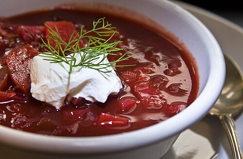

Борщ
Густой суп на мясном бульоне со свёклой, капустой и овощами, который подают со сметаной и чесночными пампушками.

Кратко о блюде
- Страна
- Украина
- Категория
- Суп
- Время приготовления
- около 2 часов
- Калорийность
- около 50 ккал на 100 г
История и особенности
Борщ — одно из самых известных блюд восточноевропейской кухни. Свой насыщенный красный цвет он получает благодаря свёкле, которую тушат отдельно с небольшим количеством уксуса или лимонного сока, чтобы она не потеряла яркость.
Рецептов борща существуют сотни: на говяжьем или свином бульоне, постный с фасолью и грибами, «зелёный» со щавелем. В каждой семье его готовят по-своему, а лучшим считается борщ, который настоялся до следующего дня.
В 2022 году ЮНЕСКО включило культуру приготовления украинского борща в Список нематериального культурного наследия, нуждающегося в срочной охране.
Ингредиенты
- говядина на кости — 500 г
- свёкла — 2 шт.
- белокочанная капуста — 300 г
- картофель — 3 шт.
- морковь и лук — по 1 шт.
- томатная паста — 2 ст. л.
- чеснок, лавровый лист, соль, перец
- сметана и зелень для подачи
Как приготовить
- Сварить бульон из говядины (около 1,5 часа).
- Обжарить лук и морковь, добавить натёртую свёклу и томатную пасту, потушить 10 минут.
- Положить в бульон картофель, через 10 минут — капусту.
- Добавить зажарку со свёклой, специи и варить ещё 10 минут.
- Дать борщу настояться и подать со сметаной.